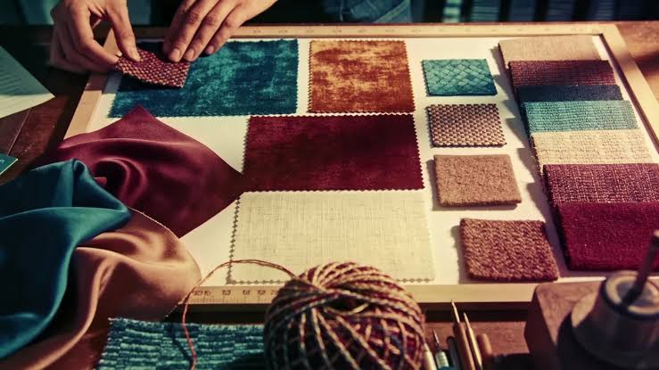

Styling Tips & Fabric Guides
Expert advice to help you look and feel your best in custom-tailored clothing.
Featured Article
 Styling Tips
Styling Tips
The Complete Guide to Getting Your First Custom Suit
Everything you need to know before investing in bespoke tailoring — from choosing the right fabric to understanding suit construction, lapel styles, and fitting sessions. A must-read for first-time custom suit buyers.
Read MoreLatest Articles
 Styling Tips
Styling Tips5 Ways to Style a Custom Blazer
From boardroom to brunch, discover versatile ways to wear your custom blazer for every occasion this season.
Read More Fabric Care
Fabric CareHow to Care for Silk Garments
Silk requires special attention. Learn the dos and don'ts of washing, storing, and maintaining your silk pieces.
Read More Trends
TrendsSummer 2026 Tailoring Trends
Relaxed fits, natural fabrics, and earth tones define this season's custom tailoring landscape. Here's what to request.
Read More DIY
DIYBasic Hemming at Home: A Beginner's Guide
Save time on simple fixes. Our step-by-step guide teaches you how to hem pants, skirts, and sleeves at home.
Read More